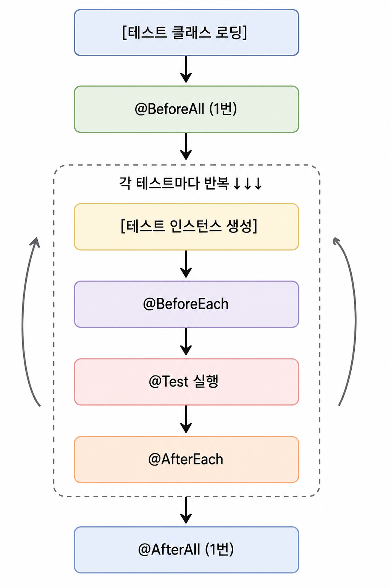

생명주기 구조도

각 단계 설명
1. 테스트 클래스 로딩
JVM이 테스트 클래스를 메모리에 올린다.
2. @BeforeAll — 전체 1번
@BeforeAll
static void init() {}- 보통 DB 연결, 서버 띄우기, 공통 리소스 준비 등을 수행한다.
static메서드여야 한다 (인스턴스 생성 전이므로).
3. 테스트 인스턴스 생성
JUnit이 테스트 메서드마다 새 인스턴스를 만든다 (기본 정책).
4. @BeforeEach — 각 테스트 실행 전 매번
- 보통 객체 초기화, mock 세팅, 공통 데이터 준비를 수행한다.
5. @Test — 테스트 진행
실제 테스트 로직이 실행된다.
6. @AfterEach — 각 테스트 끝날 때마다 실행
- 보통 파일 삭제, DB 롤백, 상태 정리 등을 수행한다.
7. @AfterAll — 전체 테스트 끝난 후 1번
- 서버 종료, 리소스 해제를 수행한다.
@BeforeAll과 마찬가지로static메서드여야 한다.